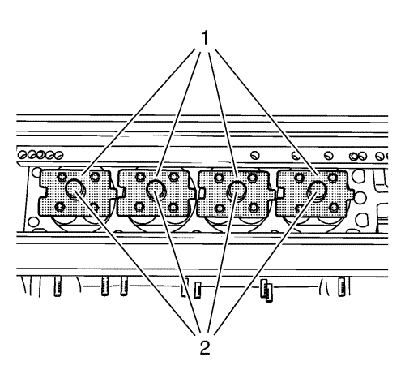
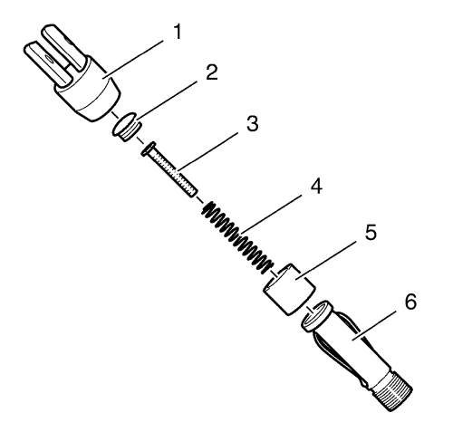
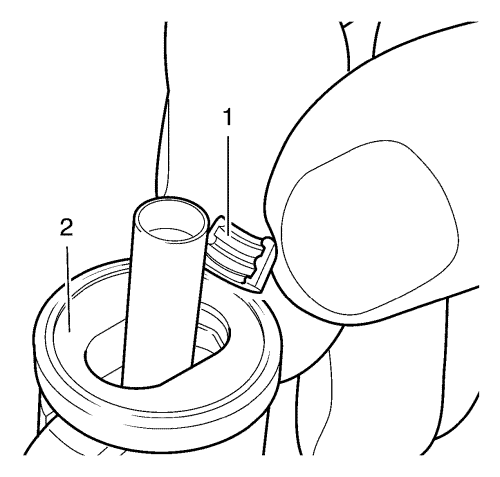
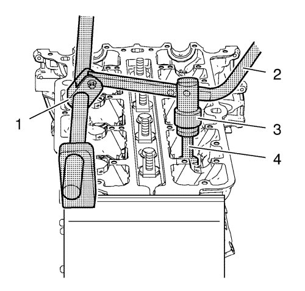

Montaje de la culata
Herramientas especiales
| • | EN-6215 Equipo de soporte |
| • | EN-6167 Juego de soporte |
| • | EN 6086 Juego sustitución de muelle y cuña |
| • | EN-840 Tenazas/herramienta de desmontaje |
| • | EN-835-A Herramienta de montaje |
Si desea informarse sobre herramientas regionales equivalentes, consultar Herramientas especiales .
Nota: Lubrique las guías de válvula y los vástagos de válvula con aceite de motor.
Nota: Asegúrese que las válvulas se montan en su posición original.
- Monte las 16 válvulas en la culata.

- Monte los refuerzos EN-6167-1 (1) y sujételos con los pernos EN-6167-5 (2) para sujetar las válvulas.
- Monte los retenes de aceite de los vástagos de las 16 válvulas. Utilice la herramienta de montaje EN-835-A para apretar los retenes de aceite de los vástagos de las válvulas.
Nota: Asegúrese de montar los muelles de las válvulas y sus seguros en su posición original.
- Monte los 16 muelles de válvula y los 16 seguros.

Nota: Si utiliza una combinación incorrecta de herramienta de montaje y espiga palpadora puede dañar la espiga o las chavetas de válvula.
- Prepare la herramienta de montaje EN-6086-200-1 para instalar las chavetas de válvula. La herramienta de montaje se debe instalar en el siguiente orden:
| 5.4. | Espiga palpadora EN-6086-200-10 (3) |
| 5.5. | Unión atornillada (2) |
| 5.6. | Adaptador de palanca (1) |

- Instale las chavetas de válvula (1) en la herramienta de montaje (2) como se muestra y fíjelas con el casquillo.

- Instale la palanca EN-6086-7 (2) junto con el adaptador de la palanca (3) y la herramienta de montaje (4) en el asidero (1).
- Empuje la herramienta de montaje hacia abajo un poco hasta que oiga que encajan las chavetas de válvula.
- Repita el procedimiento en el resto de las 15 válvulas.
- Desmonte los anclajes EN-6167-1 y los tornillos EN-6167-5.
- Desmonte la culata de la mesa de montaje EN-6215-1.
| © Copyright Chevrolet. All rights reserved |